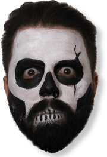
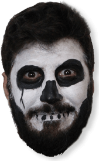

Quiénes somos
La Última Cena es un programa semanal de entretenimientos de carácter temático, de 2 horas de duración.
La mayoría de las secciones se construyen a partir de un disparador, en forma de consigna. La misma nos sirve para que les oyentes participen del programa y de los sorteos, y para lograr un hilo conductor fluido entre los contenidos y la improvisación.

